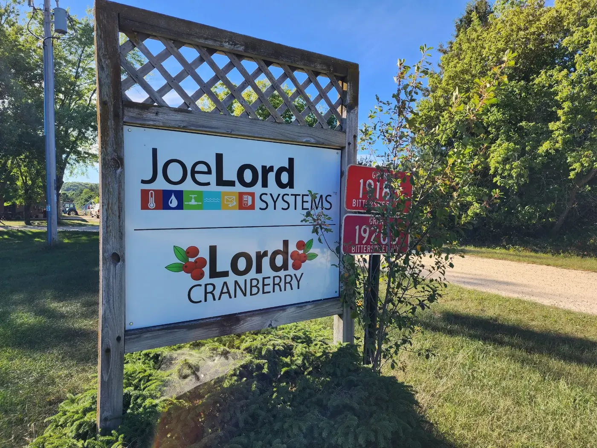
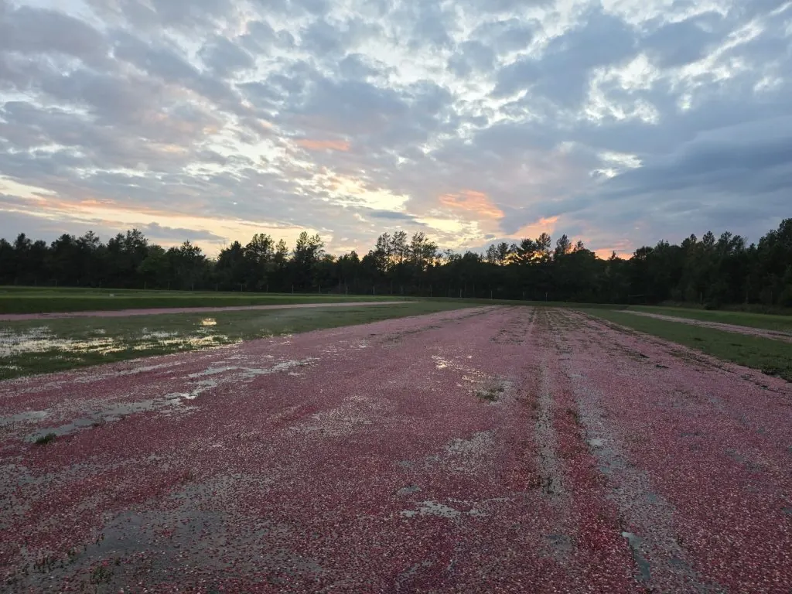
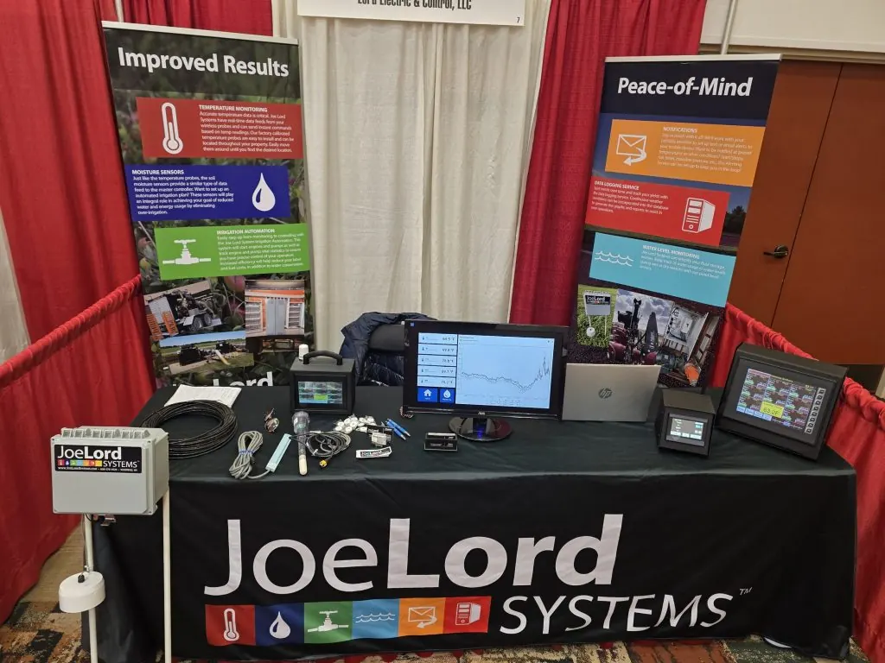
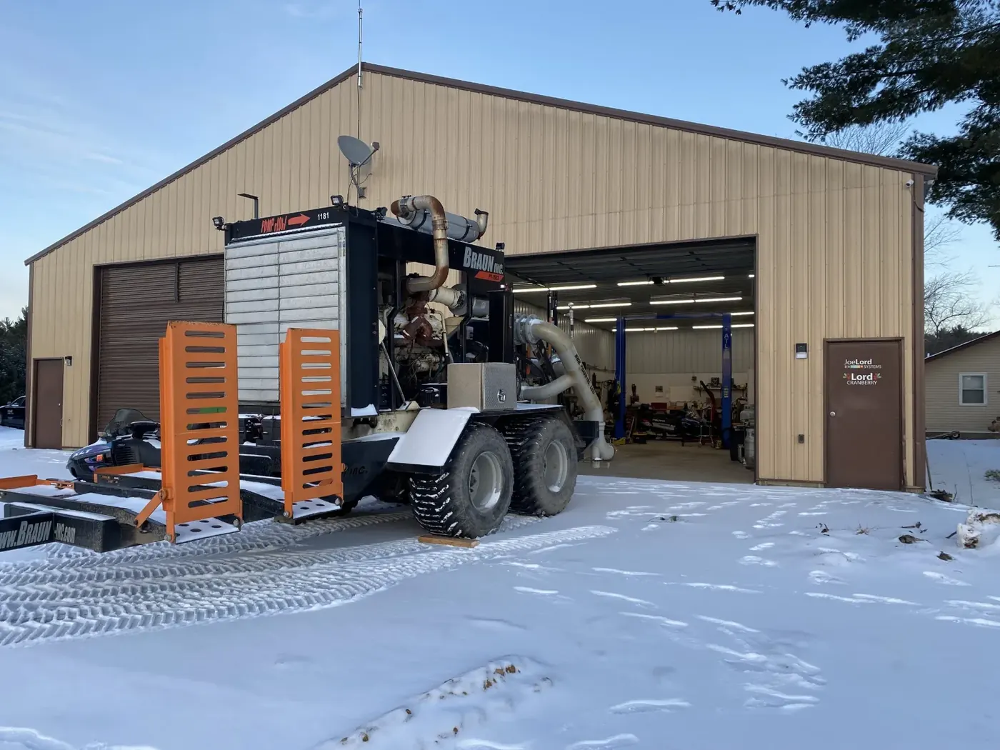

Built by farmers, for farmers
Serving Wisconsin growers since 2009, from Warrens.

It started with a simple problem
Joe Lord, a cranberry grower in Warrens, Wisconsin, lived an hour away from his marsh. He needed a way to monitor temperatures and control his pumps without driving out multiple times a day.
Unable to find a solution, Joe designed and built his own system. Word spread among fellow growers, and soon Joe was installing systems on marshes throughout Wisconsin. Today, Joe Lord Systems has completed over 300 installations.

Meet the family
A father and two sons working side by side. When you call, you talk directly to the people who design, build, install and support your system.
Joe Lord
Founder and Master Electrician
A cranberry grower who built the first Joe Lord System for his own marsh in 2009. Joe is a Wisconsin licensed Master Electrician and leads system design and electrical work on every job.
Anthony Lord
Automation and installations
Anthony handles PLC programming, the OCS 360 monitoring dashboard, new installations and repairs, and is your go-to for FJ Dynamics auto steer and precision ag.
Evan Lord
PLC programming and field service
Evan handles PLC programming, service calls and on-site troubleshooting, keeping growers’ systems running when it matters most, from frost nights to harvest.
Our journey
- 2009
The first system
Joe builds a monitoring and pump control system for his own marsh.
- 300+
Installations
Word spreads grower to grower across Wisconsin’s cranberry country.
- OCS 360
Remote dashboard
Growers monitor and control their operations from anywhere.
- 2026
FJ Dynamics dealer
Precision ag equipment joins the lineup, sold and supported locally.
Your local FJ Dynamics dealer
In 2026, Joe Lord Systems took over the FJ Dynamics dealership previously run by Elm Lake Labs (now Blossom Ag). We now sell, install and support FJD auto steer, RTK and grade control equipment across Wisconsin.
Already own FJD equipment from Elm Lake Labs? We’re now your contact for service, warranty claims, parts and upgrades. Just give us a call.

Our credentials
Master Electrician
Wisconsin licensed. Every installation meets or exceeds state codes.
PLC expert
Certified in industrial automation with years of experience.
300+ installations
Proven track record across Wisconsin since 2009.
Ready to meet us?
Schedule a consultation and let’s talk about how we can help.
- Visit
- 19205 Bittersweet Ave, Warrens, WI 54666
- Hours
- Monday to Friday, 8:00 AM to 5:00 PM. Saturday by appointment.
